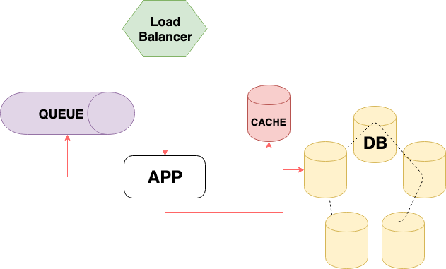

Kubernetes
Logging & Monitoring
Plan
- Introduction
- Container technology
- Kubernetes
- Logging architecture
- Monitoring
Julien Bisconti
Software engineer / DevOps / GDE
Worked at
contact
Github: @veggiemonk
Twitter: @veggiemonk
LinkedIn: julienbisconti
blog: https://veggiemonk.github.io/
How Long
from monolith to microservices ?
8 fallacies of distributed computing
- The network is reliable.
- Latency is zero.
- Bandwidth is infinite.
- The network is secure.
- Topology doesn't change.
- There is one administrator.
- Transport cost is zero.
- The network is homogeneous.
Logging & Monitoring:
monolithic app
-vs-
distributed system
| Logging | recording events |
| Metrics | data combined from measuring events |
| Tracing | recording events with causal ordering |
credit @coda
Logging
Log Levels for dev
- Info
- Debug
- Warning
- Error
- Fatal
- Zombie-Apocalypse
- Meteor
- 🤷♂️ don't care
- 🤓 when necessary
- 🤷♂️ don't care
- 🧐 to investigate
- 🤷♂️ don't care
- 🤷♂️ don't care
- 🤷♂️ don't care


Monitoring
From user to metrics
- Application errors 👉 where to look 👀
- Business metrics 👉 money
- Latency 👉 user experience

Metrics, Metrics everywhere
build OR buy

Containers
What is a container
Not a real thing. An application delivery mechanism with process isolation based on several Linux kernel features.
kernel features
Namespace
what a process can seecgroup
what a process can useDev 👉 inside container (build)
Ops 👉 outside container (run)
container = common interface
cAdvisor
docker run \
--volume=/:/rootfs:ro \
--volume=/var/run:/var/run:ro \
--volume=/sys:/sys:ro \
--volume=/var/lib/docker/:/var/lib/docker:ro \
--volume=/dev/disk/:/dev/disk:ro \
--publish=8080:8080 \
--detach=true \
--name=cadvisor \
google/cadvisor:latest
Logs for containers
- ❌ no routing
- ❌ no storage
- ❌ no file handling
write logs to: stdout/stderr
Log Levels for dev
- Info
- Debug
- Warning
- Error
- Fatal
- 🤷♂️ don't care
- 🤓 stdout
- 🤷♂️ don't care
- 🧐 stderr
- 🤷♂️ don't care
Kubernetes

Logging architecture
Node level logging

- JSON (no multiline)
/var/log/- keep previous pod logs
- pod eviction = ❌ no logs
- logrotate script
cluster level logging
Logs lifecycle & storage
independent of nodes, pods, or containers
logging with node agent

- per node agent pod (DaemonSet)
- centralized logging
- fluentd
- logs to stdout/stderr
logging with streaming side car

- logs to shared volumes
- sidecar streams logs to its own stdout
- separate log streams
- double disk usage
- better to directly write to stdout/stderr
logging with sidecar agent

- per pod agent (resources!)
- no
kubectl logs
logging from application

which logs
tips
- logs don't replace tests
- "error" means someone should investigate
- maybe no need to log everything (GDPR?)
- business metrics to the queue
- `kubectl logs --all-container` PR
/dev/termination-log
Monitoring
CPU & RAM should be enough
not really...
docker statskubectl top nodeskubectl top pods
Why monitoring
- detect/prevent outages (alerting)
- entry price for chaos engineering
- auto-scaling (HPA)
- optimize (cost & perfs)
What to monitor
- request time/rate (if it's fast, it works)
- connections (health check, DB, pods)
- kubernetes pods (CrashLoopBackOff,...)
- kubernetes internals (control plane, kubelet, ...)
- infrastructure (disk space, CPU, RAM, network,...)
RED = Request rate, Error and Duration - by Tom Wilkie
Health check
what does "healthy" mean?
Where to monitor
maybe not on the cluster that you are monitoring
don't take my word for it
These measurements describe basic properties of metrics that matter, what values we want those metrics to have, and how we’ll react if we can’t provide the expected service

Going further
Open data
example: makebook.io/open
simpleanalytics.iodoesn't track your users
GDPR friendly
THANK YOU
Github: @veggiemonk
Twitter: @veggiemonk
LinkedIn: julienbisconti
blog: https://veggiemonk.github.io/
slides: https://www.slideshare.net/julienbisconti